CSS
¿Que es?
CSS (Cascading Style Sheets) es un lenguaje utilizado para diseñar y dar estilo a las páginas web. Permite
controlar cómo se ven los elementos HTML.
Por ejemplo, si queremos cambiar el color del texto de todos los títulos de nivel 1 a azul, podemos usar CSS de la
siguiente manera:
En este caso, "h1" es el selector que indica que queremos aplicar el estilo a todos los elementos "h1" en la página. "color" es la propiedad que estamos modificando y "blue" es el valor que le estamos dando.
CSS también permite estilos más avanzados, como seleccionar elementos por su clase o identificador. Por ejemplo, si queremos aplicar un estilo a un elemento con la clase "destacado", podemos hacerlo así:
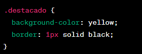Aquí, ".destacado" es el selector de clase y aplicará el estilo a todos los elementos que tengan esa clase. En este caso, estamos cambiando el color de fondo a amarillo y agregando un borde negro de 1 píxel de grosor.
Pero aún debes aplicar el CSS a tu documento HTML, de otra manera el estilo CSS no cambiará cómo tu navegador muestra el documento HTML.
-
Abre tu archivo index.html y pega la siguiente línea en algún lugar dentro del
<head>, es decir, entre las etiquetas <head> y </head>:
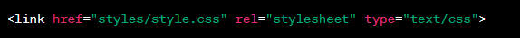 -
Guarda el archivo index.html y cárgalo en tu navegador. Debes ver algo como esto:
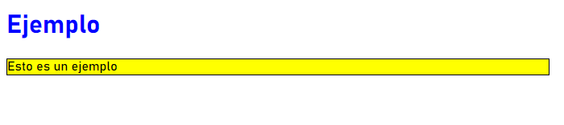
Estructura
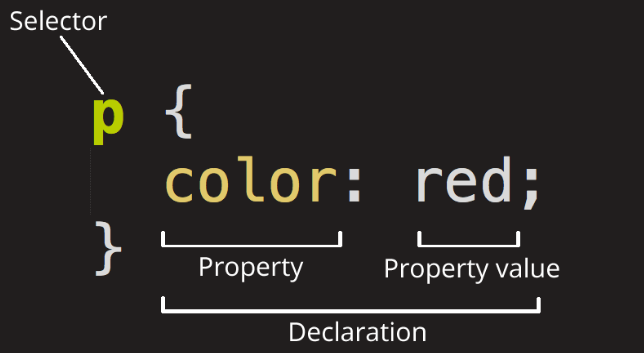Selector:
El selector es utilizado para seleccionar los elementos HTML a los que deseas aplicar estilos. Puedes seleccionar elementos por su nombre de etiqueta, clase, identificador o incluso por su posición en la estructura HTML. Por ejemplo:
- Selector de etiqueta: h1, p, div selecciona todos los elementos con esa etiqueta.
- Selector de clase: .destacado selecciona todos los elementos que tienen la clase "destacado".
- Selector de identificador: #encabezado selecciona el elemento con el identificador "encabezado".
Declaración:
Declaración: La declaración establece los estilos que se aplicarán a los elementos seleccionados. Consiste en una propiedad y un valor separados por dos puntos. Por ejemplo:
- Propiedad: Especifica qué característica del elemento se va a modificar, como color, font-size, background-color, etc.
- Valor: Es el valor asignado a la propiedad, como red, 14px, #FFFFFF, etc.
Aquí tienes un ejemplo básico de cómo se ve una regla CSS completa:
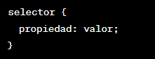Además, es posible aplicar múltiples declaraciones a un mismo selector, simplemente separándolas con punto y coma:
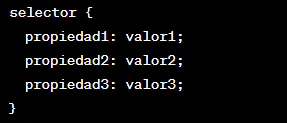Nota: Otras partes importantes de la sintaxis de css:
- Llaves { }: Las llaves se utilizan para delimitar un bloque de código CSS. Todo el estilo que deseas aplicar a un selector específico se coloca entre estas llaves. Por ejemplo:
- Dos puntos " : " : Los dos puntos se utilizan para separar una propiedad de su respectivo valor dentro de una declaración CSS.
- Punto y coma ; : El punto y coma se utiliza para separar declaraciones individuales en CSS. Cuando tienes múltiples declaraciones dentro de un bloque de código, cada una de ellas debe terminar con un punto y coma.
Recuerda que las llaves delimitan el bloque de código, los dos puntos separan las propiedades de los valores, y los puntos y comas separan las declaraciones individuales dentro del bloque de código de CSS. Estos elementos son esenciales para estructurar y separar las diferentes partes de tu código CSS de manera correcta.
Seleccionar varios elementos
Puedes enumerar los selectores separados por comas para seleccionar varios elementos al mismo tiempo. Por ejemplo:
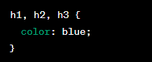Fuentes y texto
Para agregar un tipo de letra personalizado en tu página web, sigue estos pasos:
-
Primero busca el tipo de letra que deseas usar, en este ejemplo usaremos la Poppins de googleapis.
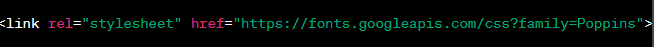 -
Ya que tenemos el enlace del tipo de letra, lo colocaremos dentro de las etiquetas <head> y </head>.
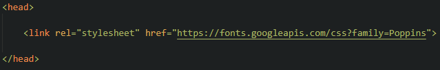 -
Ahora ya que agregamos el enlace el estilo de la fuente "Poppins" estan importados, ya podemos usar la fuente
en el css especicando "Poppins" con la propiedad "font-family", asi como se muestra en la siguiente imagen:
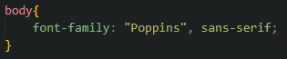
En el ejemplo se esta diciendo que queremos que todo el cuerpo del documento HTML este con esta fuente, pero tambien lo podemos colocar en ciertas estiquetas y solo en esas.
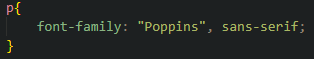
En este caso queremos que la fuente solo se aplique en las estiquetas "<p>" y deja las otras etiqueta con la fuente predeterminada.

¿Cajas en CSS?
En CSS, muchas veces se utiliza el concepto de cajas para describir y controlar la presentación de los elementos
en una página web. Sin embargo, no todo en CSS se trata exclusivamente de cajas.
Las cajas en CSS se refieren a la representación visual de los elementos HTML, donde cada elemento se considera
una caja rectangular con propiedades como ancho, alto, margen, relleno, borde, etc. Algunas propiedades CSS
comunes que se aplican a las cajas incluyen:
- width y height: para establecer el ancho y alto de la caja.
- margin y padding: para controlar los márgenes y el espacio interno de la caja.
- border: para definir el borde de la caja.
- background: para establecer el color o imagen de fondo de la caja.
Sin embargo, CSS no se limita únicamente a las cajas. También permite controlar otros aspectos de estilo y diseño de una página web, como:
- Fuentes y tipografía: puedes definir el tipo de letra, tamaño, peso, estilo, entre otros, para el texto de tus elementos.
- Posicionamiento y diseño: CSS ofrece herramientas para posicionar y diseñar elementos en la página, ya sea mediante flujos de caja normales, flexbox o grid.
- Animaciones y transiciones: puedes crear efectos de animación y transición utilizando CSS.
- Estilos de fondo: puedes aplicar colores, imágenes o gradientes de fondo a los elementos de la página.
- Estilización de enlaces: CSS permite personalizar el estilo de los enlaces, como el color, subrayado o efectos al pasar el cursor sobre ellos.
- Medios y diseño responsivo: puedes utilizar CSS para adaptar el diseño y estilo de la página a diferentes dispositivos y tamaños de pantalla.